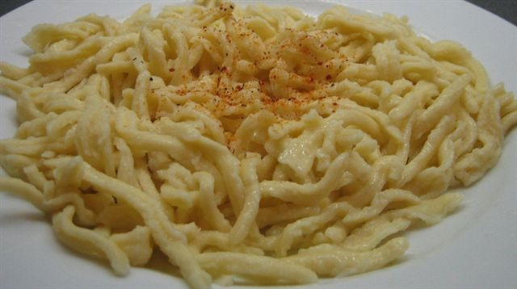

]
Authentic German Spaetzle Recipe
Authentic German Spaetzle

Description
Spaetzle has origins in the Bavarian region, commmonly known today
as southwest Germany, Alsace France, and northern Switzerland.
This is primarily a noodle dish that can be served with a roast
and steamed vegetables. Gravy or even applysauce is a common topping
for spaetzle. It is made from flour, eggs, and water.
Some cultures prefer to in substitute Milk or sour cream.
There are many styles of spaetzle, but the one we will be making
is referred to as the "Handgeschabt" style. It consists long, non-uniform
noodles made with a knife and a wooden cutting board
Ingredients
- 4 cups all-purpose flour
- 2 tsp salt
- 8 large eggs
- 3/4 cup milk (substitute water if needed)
Instructions
- Combine the eggs flour and milk in a large bowl and whisk together until the perfect consistency is reached. Not too thin and not too thick - we're aiming for the goldilocks zone.
- Assemble your work station. Get a large plate and line it with 2 layers of paper towels (they must be atleast 2-ply). Acquire a large pot, fill with hot water, and heat it to a boil. Then set it to a simmering temperature. Add salt to the water.
- With the batter bowl in your non dominant hand and a butter knife in the other, tilt the bowl over the simmering pot of water so that the batter is on the edge of the bowl's lip. Cut a slab of batter and scoop it into the pot of hot water.
- Cook 1/3 of the batter and wait for the noodles in the pot to cook. They will float to the top once they're done cooking. Transfer those noodles to the paper towel lined plater. Continue until the whole batter is cooked.
- Saute the cooked noodles in butter to form a crisp outter layer. YuM.
Things to consider:
- This is a lot of food. You will need friends or growing children to help you finish it all.
- Milk and water are interchangeable in the recipe. Use milk for a richer and thicker noodle. Water for less calorically dense noodles.
- Shelf life for the noodles is 3-4 days refrigerated.
Nutriition Facts
- calories: 296kcal
- carbohydrates: 48g
- protein: 12g
- fat: 5g
- saturated fat: 1g
- fiber: 1g
- sodium: 940mg